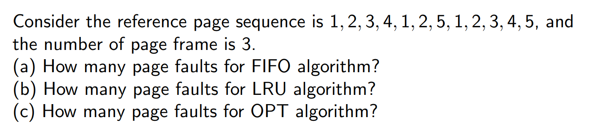

Notice: These exercises do not include answers. Refer to the Notes of each chapter for solutions
CH01
1
2
CH02
1

CH03
1

2
1 | for (i = 0; i < 4; i++) fork(); // How many processes? |
3
Draw process state diagram
CH04
1
What are the outputs?
1 | /* kai.c */ |
1 | gcc -o kai kai.c -pthread -Wall |
2
- What are two differences between user-level threads and kernel-level threads? Under what circumstances is one type better than the other?
CH05
1

2
CH06
WARNING: THIS CHAPTER IS SO DIFFICULT THAT YOU NEED TO FIND MORE EXERCISES BEYOND CLASS!

CH07
1
2
3
CH08
1
- Imagine a small address space of size 16KB, with 64-byte pages.
- Thus, we have a ?-bit virtual address space, with ? bits for the VPN and ? bits for the offset. (why?)
- A linear page table would have ? entries, even if only a small portion of the address space is in use. (why?)
- Assume each PTE is 4 bytes in size.
- Thus, our page table is ? in size.
- Given that we have ?-byte pages, the 1KB page table can be divided into ? 64-byte pages; each page can hold ? PTEs. (why?)
- We need ? bits to indicate the page directory index, ? bits to indicate the page table index in each PDE, and ? bits to indicate the offset. (why?)
2

CH09
1

2

CH10
1

CH12
1